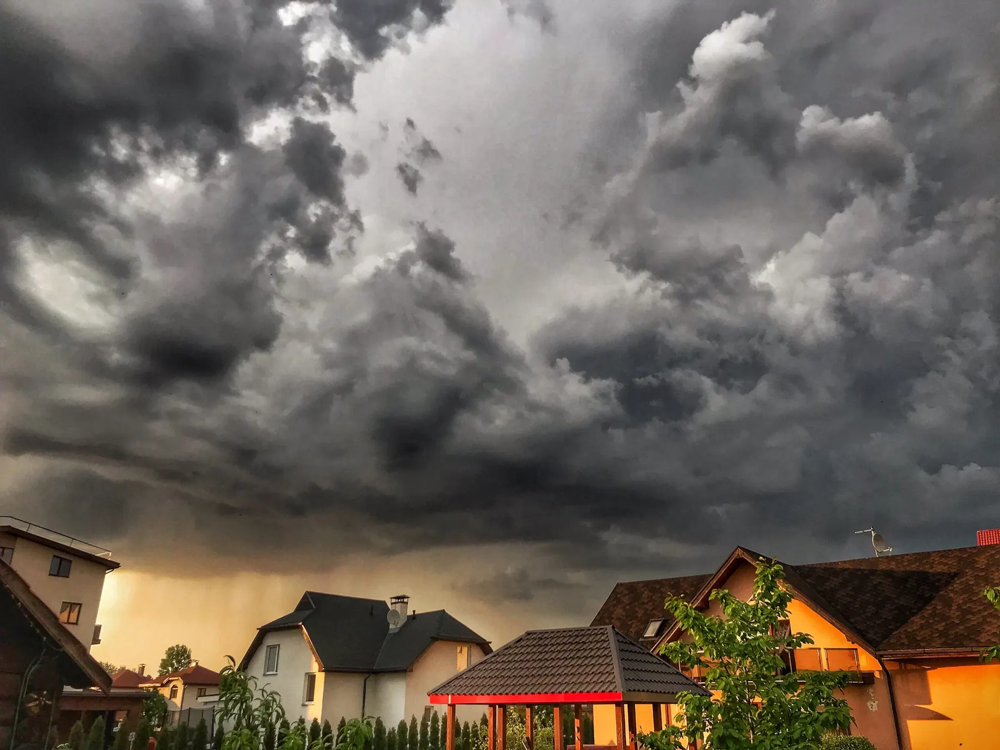

A Quote Built on Site
We walk your Gretna yard with you, note what it needs, and put the price in writing before anyone starts a mower.
At Big Easy Lawn Care, we look after lawns for homes and businesses in Gretna, the Jefferson Parish seat across the river from New Orleans. From routine mowing and weed cutting to fresh mulch, landscaping, and outdoor living builds, every plan starts with a free consultation at your property.
Lawn care in Gretna from our team includes a free consultation and no-obligation quote, a fully insured lawn professional on the job, and a satisfaction guarantee. You choose a single cleanup or a recurring program, for a house, a rental, or a commercial lot, and you handle visits and payments online.
We walk your Gretna yard with you, note what it needs, and put the price in writing before anyone starts a mower.
A fully insured lawn professional takes the job from the first pass to the final sweep, so one person answers for the result.
Book one round of mowing and weed-eating to catch up, or set a maintenance program that includes regular yard cleanups.
Front yards, rental lots, and business frontages each get a plan matched to their size and the traffic they see.
Check upcoming service, settle invoices, and request another visit from a phone or web browser without waiting on a callback.
When a visit misses the mark, let us know. Our satisfaction guarantee means we come back and correct it.
Gretna property owners call a lawn care service when rain, heat, and a full calendar leave the yard behind. Rental houses need tidy curb appeal between tenants, low spots hold water after storms, and compact lots still produce plenty of grass, weeds, and limbs that someone has to clear away.
Gretna homes and businesses can book three groups of lawn care and yard services from us. Maintenance covers mowing, trimming, mulching, weed cutting, pressure washing, and hauling. Landscaping covers new builds, restoration, drainage, and lighting, and outdoor living covers pergolas, decks, kitchens, and more, all priced after a free estimate.

Routine cuts, edges, and cleanups that keep a compact Gretna lot looking cared for all season.

Planting, regrading, and repair work for yards that need a new layout or a fresh start.
Explore Landscaping
Covered seating, decks, and cooking spaces that make a small backyard easier to use.
Explore Outdoor LivingA Gretna yard needs lawn care help when water sits on the grass for days after a storm, when worn paths turn hard and bare, or when clover and other broadleaf weeds fill the thin spots. Each one points to a problem underneath the surface that regular mowing alone will not solve.
Puddles that linger long after the rain stops can drown roots and leave soft ruts behind. That pattern usually calls for landscape drainage work rather than another cut.
Grass that thins where people and pets walk every day is often growing in compacted soil. LSU AgCenter notes that compaction forms more quickly on finer-textured soils and in areas with high traffic.
LSU AgCenter lists white clover among the troublesome broadleaf weeds in Louisiana lawns. It warns that grass left too tall between mowings can turn thin, weak, and weedy, which gives clover room to spread.
Lawn care in Gretna is different because the city packs a lot of homes into a small area beside the Mississippi River levee, from Creole cottages built in the 1840s to blocks of rental homes. Yards tend to be tight, many change hands between tenants, and the city itself lists flooding as an ongoing concern.

A local lawn care company knows Gretna weather from experience and can adjust when a storm rearranges the week. Our office is a short drive away in New Orleans, every quote follows a visit to your property, and the work is done by an insured professional and backed by our satisfaction guarantee.
We are locally owned and run from Magazine Street, just across the river.
Your price reflects your actual lot, gate, and beds, not a phone estimate.
Insured professionals do the work, and our guarantee stands behind every visit.
Landlords and owners can pay and book extra visits online from anywhere.
A lawn care visit in Gretna starts with a free consultation, where we look over the yard and hand you a no-obligation quote. Once you approve it, an insured lawn professional completes the agreed work. After that, you track service, pay invoices, and book extra visits online whenever you need them.
We check the turf, low spots, beds, and gates, then write the scope and price down for you.
Your lawn professional mows, trims, and clears what was agreed, from the front walk to the back fence.
Use your online account to pay and add a visit after a wet week or before a busy weekend.

Before booking yard work in Gretna, settle who approves and pays for the service, which parts of the lot need attention, and whether any wet or worn areas call for more than maintenance. Clear answers on those three points give you an accurate quote and a first visit that goes to plan.
If the house is a rental, decide whether you or the tenant books and pays. Online payments make it easy to manage from another address.
On a tight lot, note the narrow side yards, gates, and fence lines you want covered so nothing gets missed on the first visit.
Areas that stay soggy or bare may need landscape restoration or new mulched beds before regular mowing pays off.
Beyond Gretna, we offer lawn care in New Orleans, Metairie, Kenner, Harahan, and River Ridge, and across the lake in Covington, Mandeville, Madisonville, and Abita Springs. The same services travel with us, from grass cutting and weed cutting to mulching and hauling, so you can explore each one below before you call.
Gretna grew from three West Bank settlements: McDonoghville, Mechanickham, and a village laid out by a ferry company. They were joined as one city in 1913, and Gretna has served as the seat of Jefferson Parish since 1884.
Many of Gretna's sights cluster around Huey P. Long Avenue and the river levee. Here are a few worth a morning or an afternoon.
Gretna is one stop on a wider route. We also care for lawns in these communities, from New Orleans just across the river to four towns across the lake.
Gretna's ferry history reaches back to 1818, and its volunteer firefighters have answered calls since before the Civil War. Here are a few more facts about the city.
Jefferson Parish Transit, known as JP Transit, runs the bus routes that serve Gretna and the rest of the West Bank. Its W6 Gretna Local links the historic downtown to the wider network.
Gretna residents asking about lawn care usually want practical fixes: how often to mow, how to loosen compacted soil, how to repair bare spots, and how to clean up after a storm. Landlords ask how to keep a rental lawn in shape, and others ask about clover, mulch depth, and mulch near the house.
Clear the debris first, since fallen limbs and storm litter have to come off the grass before anyone can mow. Then catch up with a round of mowing and weed-eating. If water still stands days after the rain, the yard likely has low spots or poor drainage, which in Gretna usually calls for drainage work.
Aerate it. LSU AgCenter notes that compaction forms more quickly on finer-textured soils and in high-traffic areas, which is why worn Gretna paths turn hard and bare. For warm-season grasses, it says aeration is usually done in late spring or early summer, every one to three years, on soil that is neither very dry nor saturated.
Decide first whether the landlord or the tenant books and pays for service, then set a recurring program so the yard stays tidy between tenants. Census figures show about half of Gretna's occupied homes are rented, so we let owners manage service and pay online from another address, and every quote follows a visit to the actual lot.
Find the cause before you patch anything. Bare paths where people and pets walk usually point to compacted soil, spots that stay soggy point to drainage, and thin, weedy turf can follow grass left too tall between mowings. In Gretna, areas that stay soggy or bare may need landscape restoration before regular mowing pays off.
Mow often enough that you never remove more than one-third of the grass height at once, which LSU AgCenter treats as the key rule. For St. Augustine, that means a height of 2.5 to 3 inches, and during peak growing season in Gretna, we generally recommend weekly or bi-weekly service.
It can play a part, which is why LSU AgCenter advises keeping mulch pulled back 8 to 12 inches from a home's slab or piers. Termites are attracted to and sustained by wet materials, so around a Gretna house, also repair plumbing leaks and keep gutters clean. Those steps help keep an infestation from starting.
White clover is a broadleaf weed, and LSU AgCenter lists it among the troublesome ones in Louisiana lawns. Its Louisiana Lawns guide lists postemergence broadleaf herbicides for clover in southern lawns. Mowing on schedule matters too, since LSU AgCenter warns that grass left too tall between mowings can turn thin, weak, and weedy.
LSU AgCenter recommends mulching trees to a depth of 3 inches, shrubs to 2 inches, and bedding plants and perennials to 1 inch. Do not pile mulch around the base of a plant, because the trapped water can cause root and stem rot. In Gretna beds, that layer also helps hold moisture and suppress weeds.
Join our satisfied and happy customers. Get your free lawn care assessment today.